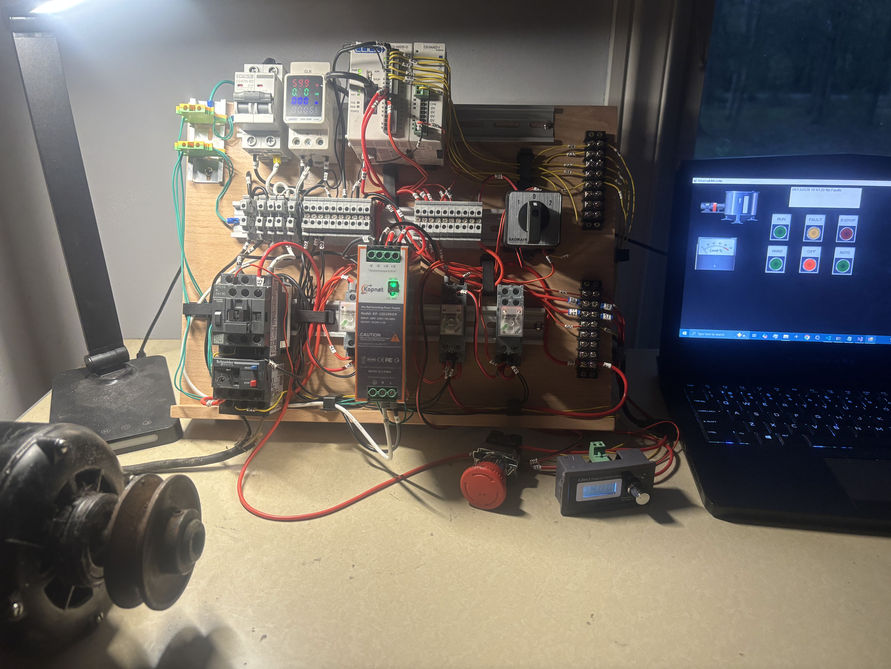
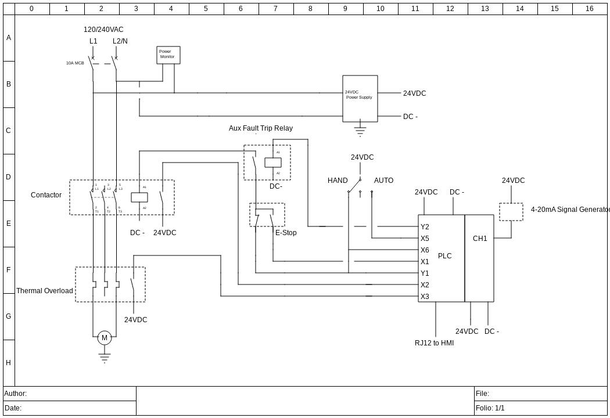

This project builds on my basic PLC motor control project, expanding from discrete logic to analog process control. I integrated an analog input card, which gave me experience setting up 4-20mA field wiring and scaling inputs inside the software. I also incorporated an HMI that pulled data from the PLC's registers over MODBUS RTU to display fault messages and statuses using AdvancedHMI software.
My goal was to make the project as scalable as possible. I used hardware capable of accepting 120 or 240V input power, and created subroutines within the program to accommodate additional I/O. I also added extra relays for physical status indicator availability and extra registers for supervisory or PID control inputs for future versions.

I created a simplified schematic to plan power distribution, control wiring, and fault signals. Incoming 120 or 240V power feeds the contactor, power monitor, and 24V power supply. I used an HOA switch for operator control, with signal wiring sent to the PLC and HMI for status display. The E-Stop and overload NC contacts are wired in series with the contactor coil, as well as an auxiliary relay the PLC energizes to break the coil circuit on a detected fault. Discrete faults latch and are cleared deliberately by cycling the HOA switch through off, while analog faults clear on their own once the input returns to a valid range.
Fault handling and fail-safes are always process dependent, and I scoped my layers of protection accordingly. Critical safety functions in this system are handled exclusively in hardware. The E-Stop and overload contacts are de-energize-to-trip and are in series with the contactor coil independently of the PLC. An overheating motor, pressed E-Stop, or open field wiring in a safety circuit will always de-energize the coil and stop the motor. The auxiliary relay covers process and diagnostic faults like loop failure or feedback loss, which aren't safety critical in this application. It sits in the same series string as the safety contacts, so a diagnostic fault interrupts the coil in hand mode as well as auto. One revision I would make is adding feedback to the auxiliary relay so that it will alarm if it fails to energize or break the circuit in a fault state.
The program was the most challenging part of this project for me. This is a project that could not all fit on one main program page, so the full sequence of events had to be planned up front through subroutines. I have no subroutine or direct monitoring for hand mode outside of the contact for the indicator to allow the motor to run in case of a program issue. The small auto subroutine could have just lived on the main page, but I wanted to set it up so that I could easily add more instruments and control down the road without major program changes. Not shown is my input scaling setup, which simply sets 4-20mA to a 0-100% scale. 4mA being 0% allows me to detect an open circuit reliably if the reading is ever lower than 0. The biggest challenge writing this, however, came from fault handling and communication with the HMI software.
The table below lists each fault, trigger parameters, and how each fault clears. The thresholds and timer values were chosen to easily demonstrate the logic. In a real installation, these values are determined from transmitter and process specifications.
| Fault | Trigger Condition | Reset |
|---|---|---|
| CH1 Short Circuit | Scaled input DF1 reads above 100.6% for longer than 500 ms |
Automatic once DF1 reads below 100% for longer than 1 s |
| CH1 Open Circuit | Scaled input DF1 reads below −1%, indicating loop current under 4 mA |
Automatic once DF1 returns to range |
| E-Stop Pressed | XIO X001 — auxiliary E-Stop contact opens |
Pull out E-Stop and cycle HOA through off |
| Thermal Overload Tripped | XIC X003 — overload NO contact closes |
Cycle HOA through off, physical contacts must be reset |
| Contactor Failure | Coil commanded on Y001 or hand mode X006 active for 500 ms while the contactor auxiliary NO contact stays open XIO X002 |
Cycle HOA through off |
| IO Module Missing 24V | XIC X102 dedicated module status bit from the manufacturer |
Automatic once supply is restored |
| IO Module Failure | 24V present, no communication with IO module. Developing integration. | — |
| HOA Switch Malfunction | Both operator modes selected at the same time, aimed toward alternative control methods in future versions | — |
| Master Fault Permissive | Any active fault parallels into the Master Fault Permissive which energizes the auxiliary interrupt relay and unlatches the contactor coil enable bit. | Every fault cleared and HOA cycled through off before operation can continue |
The last two rows are rungs I added while working through the fault logic but aren't published to the current running version of the program. Both faults are staged to be deployed once the logic and hardware develop in a way that allows me to better integrate them without bugs. One future fix I identified while reviewing is that as the open circuit fault is written, it has no hysteresis. A loose connection that chatters the input would flood the HMI with open circuit alarms. Adding a short timer and latching with reset logic like I did with the short circuit timer would make the logic around the fault much more robust despite it working correctly in a coarse sense.
Each individual fault has its own bit that turns on if the conditions in the table are met. The status of these bits are packed into a register which is copied and sent to the HMI each scan. The individual fault bits are paralleled into a master fault bit that energizes the auxiliary relay coil and resets the contactor coil output latch if active.
Setting up the communication to send the information between PLC and HMI was straightforward but required some research to convert addressing formats between programs. Once addressing was characterized, all that was needed was to declare the COM port, match baud rate, parity, and stop bit settings to allow the two devices to talk over the network.
Here is a quick demo of the HMI displaying tank level, pilot lights, and alarms.
In this video, I induce each individual fault and show the resulting alarm on the HMI.
This is the system running a motor at my desk operating both in hand mode and between setpoints in auto mode.
I used the panel as a test rig to bench a 240V single phase CSCR motor off a table saw that was suspected of being failed. I performed basic winding resistance checks and an insulation test to ground at 500VDC to verify the motor was safe to energize. Since the megger test passed, I checked the capacitors, which measured within spec. A standard multimeter cannot measure ESR, a common failure mode in motor capacitors, so since I had spares of the correct value I installed them as my next step in testing. The motor started right up and reached synchronous speed at a healthy amperage, verifying the capacitors as the root cause of the failure.
With additional instrumentation for speed, current, and power balance, plus some changes to the input power circuit, this could make an excellent universal motor test rig.